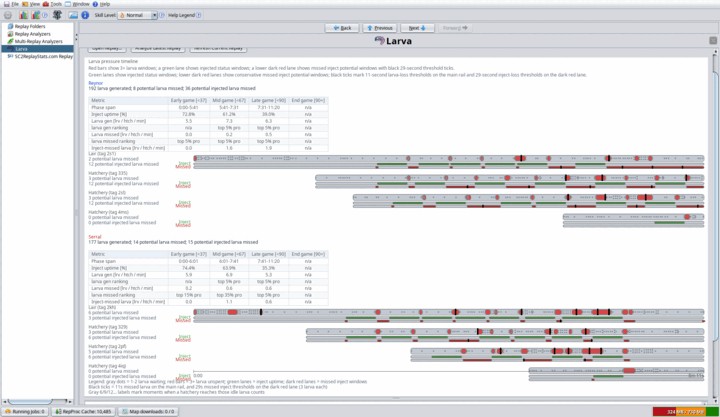
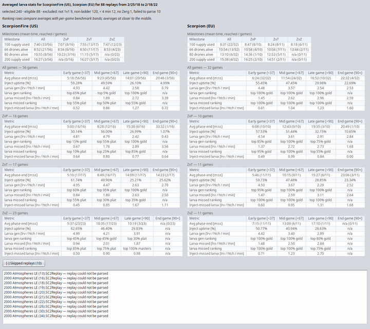

Larva Seconds Lost
A Scelight module for StarCraft II Zerg players. It shows how well you use your larva and injects, for one replay or averaged over many.
Download version @version@
@archiveFile@ · @archiveSizeKb@ KB · released @releaseDate@
What you get




Click a picture to see it full size.
What it shows
- Larva timeline per hatchery: when larva sat at 3 (wasted), inject uptime, and likely missed inject windows.
- Phase table: Early, Mid, Late and End game columns with larva generated, larva missed, missed inject value and inject uptime.
- Benchmarks: your larva rates ranked against bands from higher-level games.
- Multi analysis: pick many replays and get pooled tables for All games, ZvP, ZvT and ZvZ, plus milestones (100 supply, 66 and 80 drones, 200 supply).
- New replays open automatically after each game.
Install (one time)
You need Scelight and Java 8 or newer.
- Download the zip above.
- Close Scelight.
- Extract the zip into the folder that contains your
Scelightfolder. Afterwards this folder must exist:Scelight/mod-x/larva-seconds-lost/@version@/ - Start Scelight. Open Help → About Scelight (F1), then Available Modules → Installed Modules. Enable Larva Seconds Lost and restart Scelight.
- Open the new Larva page in the left tree.
Updates
You install by hand only once. After that, the bottom row of the Larva page tells you when a new version is out: click Install, then restart Scelight. The module checks this page once a day and sends no data about you or your replays. You can turn the check off on the Larva page.
Changes
- 3.1: first online release. In-app updates, new module description, release checks.
Help and problems
Report problems on GitHub issues or on Discord: scorpion_rbp. Source code: github.com/minetonight/LarvaSecondsLost-Scelight.
Older versions stay downloadable at LarvaSecondsLost-<version>.zip in this folder.